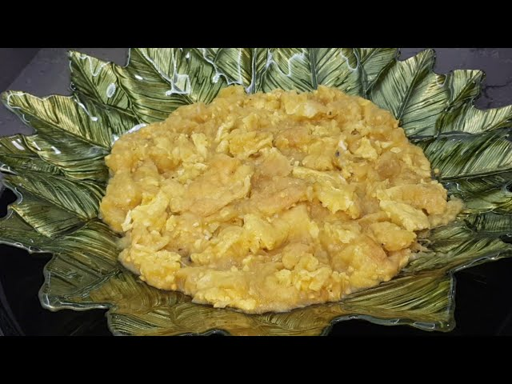

Babagannuc

What's it
Baba Ghanouj is a very delicious appetizer made with roasted eggplant and roasted peppers that you cannot get
enough of. You can feel the flavor in your palate, especially when you serve it with your red meat dish. Just
try it and you will love love love!
Ingredients
- 5 eggplants
- 2 red peppers
- 3 green peppers
- 1 medium onion
- 2-3 cloves of garlic
- 2 to matoes
- 1 tablespoon of pepper paste
- 4-5 tablespoons of olive oil
- 1 tablespoon of oil
- Black pepper
- Red pepper
- Salt
- Lemon juice
Steps
- Roast 2 red peppers and 5 eggplants, peel and crush them.
- Finely chop you medium onion and fry in a pan where you add a little oil.
- Add 1 tablespoon of pepper paste and black pepper, red pepper, salt spices.
- Mix onions and crushed eggplants, finely chopped tomatoes and parsley in a deep bowl.
- Add lemon juice, olive oil, salt and crushed garlic, mix.